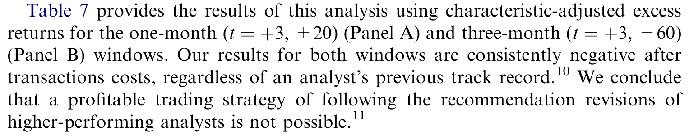
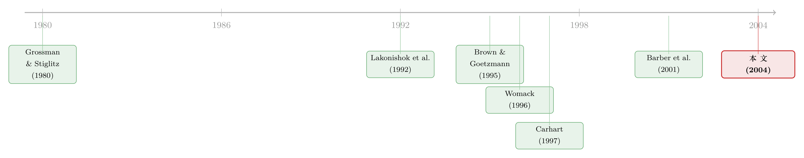

「华尔街最佳分析师」的金字招牌，到底值不值钱？
本文读的是 Mikhail, Walther & Willis (2004, Journal of Financial Economics)：卖方分析师的选股能力确实存在「持续性」——过去推荐最赚钱（最亏钱）的分析师，未来仍然更赚钱（更亏钱）；市场也在五天窗口里部分认出了这种差异。但当你想真照着「跟随明星分析师」去交易时，扣掉交易成本，超额收益就所剩无几了。
1 一个我们都见过、却很少深究的榜单
每年到了固定的时节，财经媒体都会煞有介事地排出一张榜——《华尔街日报》的 "Best on the Street"，《巴伦周刊》《机构投资者》也各有各的版本。榜单的逻辑朴素得近乎天真：把过去一段时间里、谁的股票推荐让人赚得最多，谁就是「最佳分析师」。读者顺着这张榜去理解世界：原来这个人厉害，那个人不行。
可是，但凡受过一点统计训练的人，心里都会立刻冒出一个不太礼貌的问题：这张榜，量的到底是「能力」，还是「运气」？
如果分析师之间根本没有稳定的能力差异，那么任何一年总会有人排在前面、有人排在后面——纯粹因为掷骰子。明年再掷一次，名次又会重新洗牌。这种情况下，「最佳分析师」这个称号就只是噪声的结晶，追随它毫无意义。反过来，如果真有一些人始终更会挑股票，那么榜单就承载着真实的信息，而一个更刺激的推论随之而来：跟着他们买卖，是不是就能赚钱？
这篇论文，问的就是这两个连在一起的问题。
2 为什么不能直接照搬「基金持续性」那套答案
读到这里，熟悉文献的人可能会摆摆手：业绩持续性 (performance persistence) 这个题目，共同基金那边不是早就研究烂了吗？
确实研究了很多，但结论一团乱麻。Hendricks, Patel & Zeckhauser (1993) 发现共同基金有「手热」(hot hands) 现象，短期业绩会延续（关于基金短期手热能持续多久，可参见《「手热」只有三个月》）；Brown & Goetzmann (1995) 用更大的样本、并小心控制了幸存者偏差 (survivorship bias)，却发现持续性主要存在于差基金身上；而 Carhart (1997) 干脆釜底抽薪——他论证共同基金回报里的所谓持续性，大半能被股票收益的共同因子和基金费率的黏性解释掉，根本不需要「技能」这个词。
接着，一个自然的问题是：这些买方 (buy-side) 的结论，能不能平移到卖方 (sell-side) 分析师身上？
作者的回答是：恐怕不能。两群人是不同的物种。买方分析师替基金和客户做决策，受 1940 年《投资顾问法》的约束，持仓规模、业绩报酬、能否卖空都被管着；卖方分析师只是发建议给市场，目前在这些方面几乎不受监管（Schipper, 1991 对此有专门讨论）。雇主不同、考核不同、薪酬不同——把基金的故事原封不动套到分析师头上，并不安全。
但真正关键的一步在于：研究个体卖方分析师，反而给了作者几个方法上的奢侈品。其一，分析师在 Zacks 数据库里有唯一编码，跳槽也能追踪，不像买方分析师换个基金就「消失」了；其二，能精确到哪一天他改了对某只股票的看法，而不是基金那种季度级的模糊；其三，因为能合理推断出他某天手里推荐组合的内容，就可以在个股层面、逐日地做风险调整。这一点呼应了 Chevalier & Ellison (1999) 的发现——基金业绩其实是个体经理特征的函数（他们甚至发现读了高 SAT 本科院校的经理回报更高）。要看清能力，就得盯着「人」，而不是盯着基金或共识。
3 怎么把「运气」从「能力」里拧出来
要回答「分析师之间是否真有能力差异」，最干净的办法，是先把所有能用「运气」「环境」解释的东西都扣掉，看剩下的部分还撑不撑得起一个系统性的差异。
作者用的尺子，是 Daniel, Grinblatt, Titman & Wermers (1997, 下称 DGTW) 的特征基准组合超额收益 (characteristic-adjusted excess return)。具体做法是：每年把所有 NYSE/AMEX/NASDAQ 股票，先按市值分 5 组，组内再按账面市值比 (book-to-market) 分 5 组，最后按过去 12 个月动量 (momentum) 分 5 组，得到 125 个基准组合。一只股票的「超额收益」，就是它的原始收益，减去它所属那个基准组合的市值加权收益。换句话说，规模、价值、动量这三类风格因子带来的回报先被剥掉了——剩下的，才是分析师真正「挑」出来的东西。Metrick (1999) 证明了这种特征匹配法，比四因子或 CAPM 更精确。
为什么先扣风格？因为「最佳分析师」可能只是恰好长期推荐了一批小盘价值股，而那几年小盘价值股本来就涨。不扣干净，你测到的「能力」就是风格的影子。
然后，真正承重的那一步登场了。因为同一个分析师不会对他覆盖的每只股票每年都发推荐，样本是高度不平衡的，作者借鉴 O'Brien (1990a, b) 的思路，上了一个固定效应模型 (fixed-effects model)：
这里 \(BHR_{i,k,j,t}\) 是分析师 \(i\)（受雇于券商 \(k\)）对公司 \(j\) 在 \(t\) 时点发出推荐、并在该推荐日上下两天（\(t=-2\) 到 $+2$ 的五日窗口）做多（向上修正）或做空（向下修正）所得的五日特征调整买入持有超额收益；\(\mu_i,\lambda_k,\delta_j,\gamma_t\) 分别是分析师、券商、公司、年份的虚拟变量。
这个设定的精妙之处在于：因为券商、公司、年份的平均盈利能力都被各自的固定效应吃掉了，分析师效应 \(\mu_i\) 衡量的，是他偏离这些条件均值的那部分。于是检验「分析师是否同质」，就变成一个干净利落的联合假设：
$$ H_0:\ \mu_1 = \mu_2 = \cdots = \mu_{I-1} = \mu_I $$
如果这个原假设被拒，就说明在剥掉了券商、公司、年份的影响之后，分析师之间仍然系统性地不同——能力差异是真的。
为了让 \(\mu_i\) 估得可靠，作者下了狠手的样本限制：每个分析师每年至少发 10 条推荐、且至少在 15 年里的 6 年达到；每家样本公司至少在 15 年里的 13 年有推荐。这两刀砍下来，样本从一开始的 268,170 条降到 41,865 条；再要求因变量的收益累积窗口 \((t=-2,+2)\) 内该公司没有其他推荐修正（控制截面相关），进一步降到 27,141 条。
作者很诚实地指出，这两道门会带来两种幸存者偏差：样本偏向那些能在 Zacks 上长期存活的分析师，也偏向大而被广泛覆盖的公司。但这恰恰让结论更保守——如果连这群「优中选优、且只看大公司」的分析师里都还能测出能力差异，那差异多半是真的。后续检验里他们就不再施加这两条限制了。
结果如何？\(F\) 检验在双尾 \(p<0.01\) 上拒绝了「分析师效应全相等」。即便把公司固定效应换成市值账面比、市值、ROE 这些时变特征，结论纹丝不动。分析师之间，确实不是一回事。
4 先看一眼数据：这是一批什么样的分析师和公司
在追问持续性之前，值得停下来看看样本的画像，因为它决定了结论能推广到谁身上。数据来自 Zacks Investment Research，覆盖 1985–1999 年，最终是 4,923 位分析师对 7,845 家公司发出的 268,170 条推荐修正与重申。
样本公司明显偏大、偏热门：中位数总资产 $1.5 billion，而全体 Compustat 公司的中位数只有 $82.0 million；中位数分析师覆盖人数是 15.0，全体 Compustat 公司却只有 1.0（McNichols & O'Brien 2001 发现 40.3% 的 Compustat 公司根本没有分析师覆盖）。65.8% 的样本公司在 NYSE 上市。样本里的分析师也更资深——平均覆盖 25.0 家公司、在 Zacks 上待了 7.1 年。
接着是一张很有信息量的转移矩阵（Table 2）：行是分析师此前对某股的推荐档位，列是当前档位，对角线是「重申」、非对角线是「修正」。两个数字最能说明问题：把推荐从「买入」上调到「强烈买入」，五日平均超额收益 (BHR) 是 1.64%，从「持有」上调到「强烈买入」更高，达 2.13%；而重申「强烈买入」只有 0.05%，重申「持有」甚至是 -0.15%。
换句话说，市场只对改变有反应，对重复几乎无动于衷。这与 Francis & Soffer (1997)、Asquith, Mikhail & Au (2004) 一致——反应的方向和大小，既取决于当前档位，也取决于此前档位（关于一份研报里到底哪些字句在动价格，可参见《拆开一份研报》）。正因为重申几乎没有市场反应，作者此后只分析修正、不分析重申。顺带一提，样本里约 55% 的当前推荐是强烈买入或买入，39% 是持有，卖出和强烈卖出合计才约 6%——分析师天生不爱说「卖」，这个老问题在这里再次现身。
5 持续性，以及一个越拉越长的差距
确认了分析师不同质，下一个、也是核心的问题来了：这种差异，会持续吗？
作者的检验直截了当：用过去（1 年、3 年或 5 年）的特征调整超额收益给分析师的推荐组合排序，分出「过去最赚钱」和「过去最不赚钱」两端，再看他们未来的推荐表现。
结论很清楚：过去上调推荐赚得最多（下调推荐亏得最狠，即做空最成功）的那批分析师，未来继续跑赢；过去表现最差的，未来继续垫底。无论用过去 1 年、3 年还是 5 年来衡量，这个模式都成立。而真正漂亮的一笔是——衡量历史业绩的窗口越长，顶端与底端分析师未来超额收益的差距就越大。这恰恰是「能力」而非「运气」该有的样子：运气不会因为你观察得更久而变得更可分辨，能力会。
这让人想起共同基金那边的争论。Carhart (1997) 把基金持续性大半归因于共同因子和费率；而这里，因子（规模、价值、动量）已经被 DGTW 基准扣掉了，差异依然存在。卖方分析师这条线，似乎比共同基金那条线，给「技能真实存在」留下了更硬的证据。
6 反转：市场认得出，可你赚不到
到这一步，故事似乎在朝一个温暖的方向走：有能力的分析师确实存在，且能力可识别。那么一个让无数散户心动的问题不可避免地浮现：跟着明星分析师交易，能发财吗？
作者先问了一个前置问题：市场认不认得这些高手？答案是认得。控制住公司规模和券商规模后，对于高业绩分析师发出的上调（下调），市场在以修正日为中心的五日窗口里反应得更正（更负）。市场不傻，它在定价时已经给「这个人靠谱」打了折扣。
但反转就藏在「认得」和「认全」之间。作者发现，这个反应是不完全的：剔除掉最初的五日市场反应之后，推荐修正后一个和三个交易月里的超额收益，仍然与分析师的历史业绩正相关——高手上调后的股票，在随后的一到三个月里还会继续往上漂。这就是经典的推荐后漂移 (post-recommendation drift)，与 Stickel (1995)、Womack (1996)、Mikhail, Walther & Willis (1997) 一脉相承。
漂移的存在，像是在向交易者招手：既然价格反应慢半拍，那在修正发布后的第三个交易日，做多高手的上调、做空高手的下调，不就能把那截漂移收入囊中？作者真的去做了这个策略的实证。
如表 7 所示，这个策略毛收益确实为正——它抓到了漂移。可一旦把交易成本（参考 Keim & Madhavan 1998 对机构股票交易成本的估计）算进去，超额收益就被吞噬殆尽，净收益在统计上不显著。明星分析师的金字招牌，看得见、却抓不住。

Table 7: provides the results of this analysis using characteristic-adjusted excess
这个看似扫兴的结论，其实落在了一个极优雅的理论坐标上：Grossman & Stiglitz (1980) 的「有效市场悖论」。在一个竞争且理性的经济里，信息搜集者必须在期望意义上为他们的搜寻与处理成本赚回一份回报，否则没人愿意去搜集信息、价格也就无从有效。高业绩分析师之所以能在自己修正的那一刻获得超额回报，正是市场付给「信息生产」的报酬；而这份报酬恰好被交易成本这道墙挡在了外部套利者门外——市场因此处在一种「不完全、但自洽」的有效状态。能力是真的，漂移是真的，可天下没有免费的午餐。
7 文献脉络
把这篇论文放回它生长的土壤里，脉络就清晰了。
最上游是 Grossman & Stiglitz (1980) 那个绕不开的悖论——信息有成本，所以价格不可能完全有效，信息生产者必须被付费。这为「为什么高手能赚、外人却赚不到」提供了理论锚点。
中游分两支。一支是买方持续性之争：Lakonishok, Shleifer & Vishny (1992) 在养老金里看到些许持续性，Hendricks et al. (1993) 报告共同基金的「手热」，Brown & Goetzmann (1995) 强调差基金的持续性并警惕幸存者偏差，到 Carhart (1997) 几乎把持续性解释成因子与费率的副产品。另一支是卖方推荐的价值：Stickel (1995)、Womack (1996) 记录了推荐后的价格漂移，Barber, Lehavy, McNichols & Trueman (2001) 检验了共识推荐的盈利性，Barber et al. (2000) 关注券商规模的差异。

本文恰好坐在两支的交汇处：它把买方持续性的问法，搬到卖方分析师的个体层面，又用 Daniel et al. (1997) 的特征基准把风格因子的干扰剥干净，从而第一次干净地回答了「个体卖方分析师的相对选股能力是否持续」。它也与 Hong & Kubik (2003) 互为镜像——后者发现业绩好的卖方分析师更可能跳去更显赫的券商，这种流动恰恰可能是基金研究里测不出持续性的原因之一。
8 评论与延伸（Q&A + 研究方向）
(a) 几个可能的疑问
Q：DGTW 特征调整和四因子模型，到底差在哪？为什么非用它不可？
四因子是把收益对市场、规模、价值、动量四个因子做回归，用 beta 度量暴露；DGTW 则是直接给每只股票匹配一个「规模×价值×动量」都相近的基准组合，用收益之差度量超额。Metrick (1999) 论证后者更精确，尤其在个股、逐日层面——这正是本文相对基金研究的方法优势所在。
Q：那两道苛刻的样本门槛（6/15 年、13/15 年），会不会把结论「制造」出来？
方向恰好相反。门槛让样本偏向长期存活、覆盖大公司的「优等生」分析师，这压缩了他们之间的差异，使检验更难拒绝「无差异」。能在这样保守的样本里仍拒绝原假设，反而增强了可信度。代价是外部有效性受限——结论严格说只适用于覆盖大而热门公司的资深分析师。
Q：测到的「能力」，会不会只是分析师抢先拿到了券商或公司的内部消息，而非选股本领？
固定效应能吸收掉「某券商整体信息更灵」「某公司整体更好猜」的部分，但无法区分「个人选股技巧」与「个人获取私有信息的渠道」。本文测的是净化掉环境后、依附于个人的那部分盈利能力，至于它来自天赋还是人脉，论文并未、也无法分离。
Q：交易策略不赚钱，是不是说明市场其实是有效的、前面的持续性没意义？
不能这么读。持续性（能力差异）和可套利性（外人能否赚钱）是两件事。Grossman-Stiglitz 框架里，二者本就该并存：信息生产者获得报酬（持续性为真），而这份报酬被交易成本锁在套利者门外（策略不赚钱）。市场是「不完全有效」，而非「完全有效」。
Q：为什么市场对「重申」几乎没反应？
因为重申不含新增信息——分析师只是重复了已知立场。本文转移矩阵显示重申强烈买入仅
0.05%、重申持有-0.15%，而修正的反应大得多（如买入→强烈买入1.64%）。价格反应的是信息的变化量，不是水平。
Q：卖方分析师天生不爱说「卖」，这会污染持续性结论吗？
样本里卖出+强烈卖出合计才约 6%，分布严重偏向乐观。这意味着「做空下调」那一端的样本更稀、噪声更大，下调侧的持续性估计精度天然更低。它不至于推翻上调侧的结论，但提醒我们对下调侧的解读要更谨慎。
(b) 几个可能的研究问题与提案
1. 把这套「个体持续性」框架搬到公司债分析师/评级分析师
【经济故事】股票推荐的持续性是个人选股技巧的体现；信用市场里，分析师与评级机构对债券的相对判断是否也有个体持续性？信用事件更稀疏、违约是离散的尾部事件，能力的「信号—噪声比」结构与股票完全不同。 【可行性】中。需要个体层面的卖方信用分析师推荐数据（较难获取，部分可由 I/B/E/S 债券板块或券商研报文本补齐）；识别上可复用本文的固定效应+基准调整思路，但债券的「特征基准」如何构造（久期、评级、流动性）是难点。
2. 高业绩分析师的「人才流动」与持续性的相互作用
【经济故事】Hong & Kubik (2003) 发现好分析师会跳去更好的券商。那么持续性中有多少来自「人」、多少来自「平台」？跳槽是一次天然的拆分实验：同一个 \(\mu_i\) 在换券商前后是否稳定，能识别能力是否可携带。 【可行性】高。Zacks/I-B-E-S 的唯一分析师编码天然支持追踪跳槽；用分析师×券商的交互固定效应，对比跳槽前后的 \(\mu_i\) 即可，识别干净、数据可得。
3. 外资持有人结构是否放大或抑制推荐后漂移
【经济故事】推荐后漂移源于信息扩散的迟滞。若一只股票的边际投资者中外资占比高、信息处理更慢（或更快），漂移的速度与幅度应随持有人结构系统性变化——这把「能力持续性」与「谁在接收信息」连了起来。 【可行性】中。需要个股层面的外资持股数据（如 13F、各国持仓披露）与推荐修正数据合并；识别可用外资持股占比对漂移幅度做横截面回归，但外资持股的内生性（外资本就偏好某类股票）需用指数纳入等外生冲击来处理。
4. 交易成本的异质性是否决定了「明星策略」对谁可行
【经济故事】本文用平均交易成本判定策略不赚钱。但大机构的成本远低于散户，Keim & Madhavan (1998) 也显示成本随规模、流动性差异巨大。那么「跟随高手」对低成本的大机构是否反而可行？这把市场有效性变成了一个关于交易者身份的问题。 【可行性】高。可用机构实际成交成本（如 Ancerno/ITG 数据）替代平均成本，重做本文的多空策略净收益，识别简单、政策含义直接。
9 我的判断
这篇论文最漂亮的地方，是它把一个被媒体榜单和直觉反复消费的问题，落进了一个可证伪的统计框架，并用 Grossman-Stiglitz 的理论把三块看似矛盾的证据——能力持续、市场部分识别、套利不可行——焊成了一个自洽的整体。它对「个体而非基金」的坚持，以及用 DGTW 基准把风格干扰剥离的做法，至今仍是研究分析师技能的范本。
但有两处识别上的隐忧值得记下。其一是幸存者偏差：那两道样本门槛虽然让结论更保守，却也让外部有效性收窄到「覆盖大公司的资深分析师」，我们并不知道这套结论对覆盖小盘股、冷门股的分析师是否成立——而那恰恰是信息最不对称、能力最该值钱的地方。其二是能力来源的不可分性：固定效应净化掉了环境，却没能告诉我们 \(\mu_i\) 究竟是选股天赋，还是私有信息渠道，抑或仅仅是更早拿到券商内部观点的「近水楼台」。
我接下来最想看到的，是把交易成本从「平均」拆成「随交易者身份而变」，再重做那个多空策略——因为「市场是否有效」的答案，很可能不是一个 yes/no，而是「对谁有效」。如果低成本的大机构真能从明星分析师身上榨出净收益，那 Grossman-Stiglitz 的那道墙，就不是市场的属性，而是交易者的特权了。
参考文献
- Barber, B., Lehavy, R., McNichols, M., Trueman, B. (2001). Can investors profit from the prophets? Security analyst recommendations and stock returns. The Journal of Finance 56(2), 531–563.
- Brown, S., Goetzmann, W. (1995). Performance persistence. The Journal of Finance 50(2), 679–698.
- Carhart, M. (1997). On persistence in mutual fund performance. The Journal of Finance 52(1), 57–82.
- Chevalier, J., Ellison, G. (1999). Are some mutual fund managers better than others? Cross-sectional patterns in behavior and performance. The Journal of Finance 54(3), 875–899.
- Daniel, K., Grinblatt, M., Titman, S., Wermers, R. (1997). Measuring mutual fund performance with characteristic-based benchmarks. The Journal of Finance 52(3), 1035–1058.
- Grossman, S., Stiglitz, J. (1980). On the impossibility of informationally efficient markets. The American Economic Review 70(3), 393–408.
- Hendricks, D., Patel, J., Zeckhauser, R. (1993). Hot hands in mutual funds: Short-run persistence of relative performance, 1974–1988. The Journal of Finance 48(1), 93–130.
- Hong, H., Kubik, J. (2003). Analyzing the analysts: Career concerns and biased earnings forecasts. The Journal of Finance 58(1), 313–351.
- Keim, D., Madhavan, A. (1998). The cost of institutional equity trades. Financial Analysts Journal 54(4), 50–69.
- Lakonishok, J., Shleifer, A., Vishny, R. (1992). The structure and performance of the money management industry. Brookings Papers: Microeconomics, 339–379.
- Metrick, A. (1999). Performance evaluation with transactions data: The stock selection of investment newsletters. The Journal of Finance 54(5), 1743–1775.
- Mikhail, M., Walther, B., Willis, R. (1997). Do security analysts improve their performance with experience? Journal of Accounting Research 35(Suppl.), 131–157.
- O'Brien, P. (1990). Forecast accuracy of individual analysts in nine industries. Journal of Accounting Research 28(2), 286–304.
- Stickel, S. (1995). The anatomy of the performance of buy and sell recommendations. Financial Analysts Journal 51(5), 25–39.
- Womack, K. (1996). Do brokerage analysts' recommendations have investment value? The Journal of Finance 51(1), 137–167.